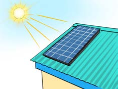
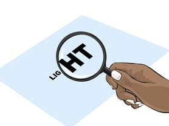
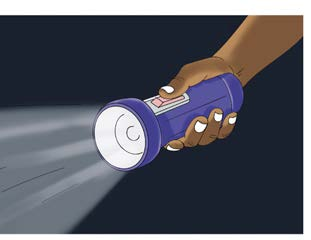

Solar panels: Solar panels capture sunlight and convert it into electricity, which can power homes.

Lens (magnifying glasses): Lens use light to make objects look larger and clearer.

Flashlights: Flashlights use light to help us see in the dark.
Sound energy
Sound energy is a type of energy that we can hear. Sound is produced by the vibration of various objects. These vibrations travel as waves. The sound waves move back and forth through materials. When you strike a drum, blow a whistle, or play a guitar, what is produced is sound. Other sources of sound include the keyboard, trumpet, and bell. Additionally, sound is produced when people talk or animals make noise. A chicken calling its chicks or an airplane flying also creates sound. Sound facilitates communication. Figure 13 shows actions that produce sound.